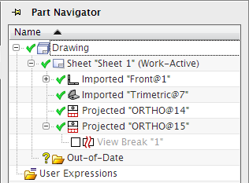
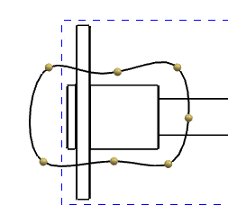

In the Part Navigator, expand the Projected “ORTHO@15” node, and then suppress the view break by clearing the green check box.
You must suppress the view break so that you can create a sketch curve in the view which you will use to create a break-out section view.

Right-click on the border of the ORTHO@15 view, and then select Active Sketch View.
Choose Insert→Sketch Curve→Studio Spline.
|
Tip |
Press S on the keyboard to more quickly access the Studio Spline command. |
In the Studio Spline dialog box, in the Parameterization group, make sure the Closed check box is selected.
Click in the graphics window to specify the points of a studio spline similar to the one shown below.

Click OK to create the studio spline.
On the Sketch Tools toolbar, click Finish Sketch.